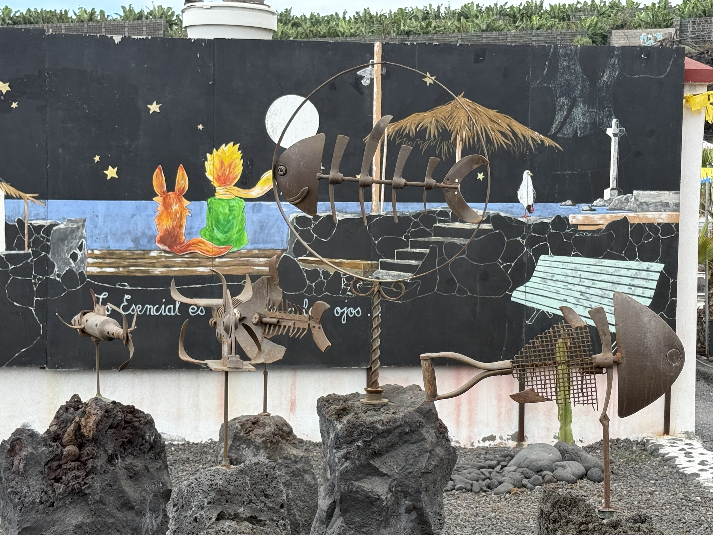
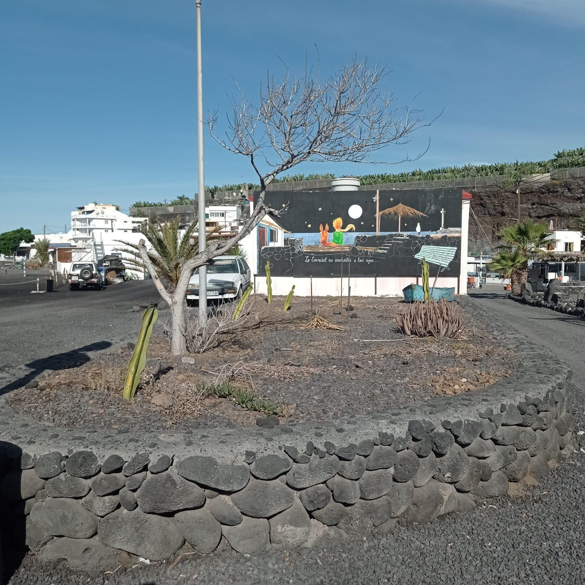
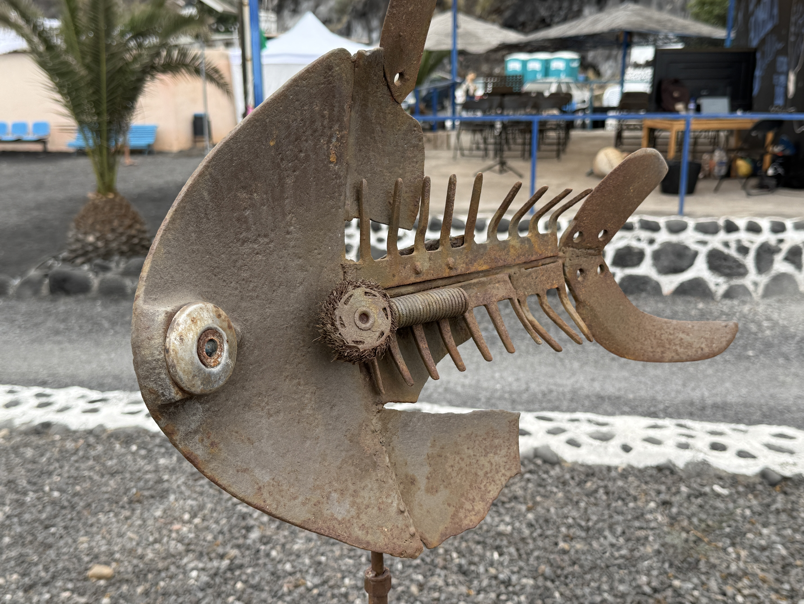
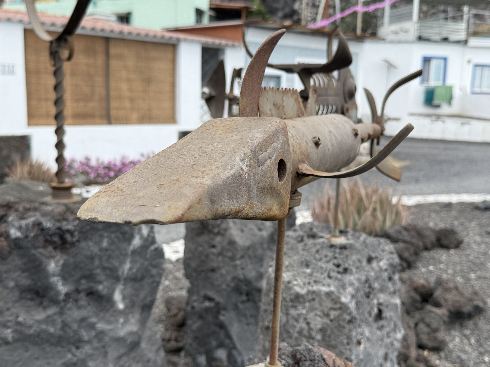

Jardín de La Bombilla
La Bombilla · Herrumbre Vivo · 2025
En 2025 se desarrolló una actuación de recuperación y puesta en valor de este jardín del barrio de La Bombilla, en Los Llanos de Aridane. La intervención combinó labores de limpieza, acondicionamiento y mejora del espacio con la incorporación de esculturas de Herrumbre Vivo, integradas en el entorno como parte de una propuesta artística y ambiental.
Las obras que forman parte del jardín fueron creadas principalmente a partir de metales reciclados, piezas recuperadas y materiales reutilizados. Elementos que habían perdido su función original adquieren así una nueva vida mediante el trabajo artístico, transformándose en esculturas que relacionan arte, reciclaje y sostenibilidad.
De esta manera, las piezas no funcionan únicamente como elementos decorativos, sino también como una invitación a reflexionar sobre el aprovechamiento de los recursos, la generación de residuos y las posibilidades de la reutilización dentro de la creación artística.
El proyecto contó con la colaboración de la Asociación de Vecinos Varadero La Bombilla y fue financiado por las áreas de Turismo y Medio Ambiente del Ayuntamiento de Los Llanos de Aridane.
Las esculturas forman un conjunto artístico integrado en el jardín y no cuentan con títulos individuales.
La actuación combina la recuperación del espacio, la participación vecinal y la presencia de obras de Herrumbre Vivo con una vertiente de sensibilización ambiental. La utilización de metales reciclados y materiales recuperados refuerza el mensaje de que aquello que se considera residuo puede transformarse y adquirir un nuevo valor mediante la creatividad y la reutilización.
Como continuación de esta filosofía, el 26 de agosto de 2026 se realizó en La Bombilla un taller ambiental dedicado al medio marino, enmarcado dentro de las fiestas de La Bombilla. La actividad permitió acercar a los participantes diferentes cuestiones relacionadas con el conocimiento, la conservación y la protección de nuestros mares y costas.
Ese mismo día se llevó a cabo la instalación del código QR del jardín, incorporando este espacio al proyecto CaminArte. Mediante este recurso digital, vecinos y visitantes pueden acceder desde sus dispositivos móviles a información sobre la actuación, las obras, su autor y el contexto artístico y ambiental del proyecto.
La combinación de intervención artística, educación ambiental y acceso digital a la información permite que el jardín continúe funcionando como un espacio de divulgación más allá de las actividades realizadas presencialmente.

Natural de Fuencaliente, Gustavo Díaz crea bajo la marca Herrumbre Vivo proyectos que combinan arte, sostenibilidad, identidad cultural y participación ciudadana. Transforma materiales en desuso en esculturas e instalaciones que ponen en valor las tradiciones y el patrimonio de Canarias.
Es el creador e impulsor de CaminArte, un proyecto de geolocalización cultural e itinerarios artísticos sostenibles que fusiona la memoria histórica, el paisaje palmero y el arte del metal reciclado en favor del medio ambiente.
In 2025, a project was carried out to restore and enhance this garden in the neighbourhood of La Bombilla, in Los Llanos de Aridane. The intervention combined cleaning, conditioning and improvement work with the installation of sculptures by Herrumbre Vivo, integrated into the surroundings as part of an artistic and environmental project.
The works in the garden were created mainly from recycled metals, recovered pieces and reused materials. Objects that had lost their original purpose were given a new life through artistic creation, becoming sculptures that connect art, recycling and sustainability.
In this way, the pieces are not only decorative elements but also an invitation to reflect on the use of resources, waste generation and the possibilities of reuse within artistic creation.
The project was developed with the collaboration of the Varadero La Bombilla Residents' Association and was funded by the Tourism and Environment Departments of Los Llanos de Aridane Town Council.
The sculptures form an artistic ensemble integrated into the garden and do not have individual titles.
The project combines the recovery of the space, community participation and works by Herrumbre Vivo with an environmental awareness component. The use of recycled metals and recovered materials reinforces the idea that what is considered waste can be transformed and given new value through creativity and reuse.
As a continuation of this philosophy, on 26 August 2026 an environmental workshop focused on the marine environment was held in La Bombilla as part of the La Bombilla local festivities. The activity introduced participants to different issues related to the knowledge, conservation and protection of our seas and coastlines.
On the same day, the garden's QR code was installed, incorporating the site into the CaminArte project. Through this digital resource, residents and visitors can access information about the intervention, the artworks, their creator and the artistic and environmental context of the project from their mobile devices.
The combination of artistic intervention, environmental education and digital access to information allows the garden to continue operating as a space for outreach and awareness beyond the activities held in person.
Born in Fuencaliente, Gustavo Díaz creates projects under the Herrumbre Vivo name that combine art, sustainability, cultural identity and community participation. He transforms discarded materials into sculptures and installations that highlight the traditions and heritage of the Canary Islands.
He is the creator and driving force behind CaminArte, a cultural geolocation and sustainable artistic itinerary project that brings together historical memory, the landscape of La Palma and recycled metal art in support of environmental awareness.
Im Jahr 2025 wurde eine Maßnahme zur Wiederherstellung und Aufwertung dieses Gartens im Viertel La Bombilla in Los Llanos de Aridane durchgeführt. Die Arbeiten umfassten Reinigung, Aufbereitung und Verbesserung des Bereichs sowie die Einbindung von Skulpturen von Herrumbre Vivo, die als Teil eines künstlerischen und ökologischen Konzepts in die Umgebung integriert wurden.
Die im Garten ausgestellten Werke wurden hauptsächlich aus recycelten Metallen, wiedergewonnenen Teilen und wiederverwendeten Materialien geschaffen. Gegenstände, die ihre ursprüngliche Funktion verloren hatten, erhalten durch die künstlerische Bearbeitung ein neues Leben und werden zu Skulpturen, die Kunst, Recycling und Nachhaltigkeit miteinander verbinden.
Die Werke sind daher nicht nur dekorative Elemente, sondern laden auch dazu ein, über Ressourcennutzung, Abfallerzeugung und die Möglichkeiten der Wiederverwendung in der künstlerischen Gestaltung nachzudenken.
Das Projekt wurde in Zusammenarbeit mit dem Nachbarschaftsverein Varadero La Bombilla durchgeführt und von den Bereichen Tourismus und Umwelt der Stadtverwaltung von Los Llanos de Aridane finanziert.
Die Skulpturen bilden ein in den Garten integriertes künstlerisches Ensemble und besitzen keine individuellen Titel.
Die Maßnahme verbindet die Wiederherstellung des Ortes, die Beteiligung der Nachbarschaft und Werke von Herrumbre Vivo mit einem Schwerpunkt auf Umweltbildung. Die Verwendung von recycelten Metallen und wiedergewonnenen Materialien vermittelt die Botschaft, dass vermeintlicher Abfall durch Kreativität und Wiederverwendung verwandelt und neu aufgewertet werden kann.
Als Fortsetzung dieses Ansatzes fand am 26. August 2026 in La Bombilla ein Umweltworkshop zum Thema Meer und Küste statt. Die Veranstaltung war Teil der Festlichkeiten von La Bombilla. Dabei wurden verschiedene Themen rund um das Verständnis, den Schutz und die Erhaltung unserer Meere und Küsten vermittelt.
Am selben Tag wurde auch der QR-Code des Gartens installiert, wodurch der Ort in das Projekt CaminArte aufgenommen wurde. Über diesen digitalen Zugang können Einwohner und Besucher mit ihren Mobilgeräten Informationen über die Maßnahme, die Kunstwerke, den Künstler sowie den künstlerischen und ökologischen Kontext abrufen.
Die Verbindung von Kunst, Umweltbildung und digitalem Informationszugang macht den Garten auch über die vor Ort durchgeführten Aktivitäten hinaus zu einem dauerhaften Ort der Vermittlung und Sensibilisierung.
Der aus Fuencaliente stammende Gustavo Díaz entwickelt unter dem Namen Herrumbre Vivo Projekte, die Kunst, Nachhaltigkeit, kulturelle Identität und Bürgerbeteiligung miteinander verbinden. Er verwandelt ausgediente Materialien in Skulpturen und Installationen, die Traditionen und Kulturerbe der Kanarischen Inseln hervorheben.
Er ist der Schöpfer und Initiator von CaminArte, einem Projekt zur kulturellen Geolokalisierung und zu nachhaltigen künstlerischen Routen, das historische Erinnerung, die Landschaft La Palmas und Kunst aus recyceltem Metall im Sinne des Umweltschutzes miteinander verbindet.
En 2025, une intervention de récupération et de mise en valeur de ce jardin du quartier de La Bombilla, à Los Llanos de Aridane, a été réalisée. Le projet a combiné des travaux de nettoyage, d'aménagement et d'amélioration de l'espace avec l'installation de sculptures de Herrumbre Vivo, intégrées dans leur environnement dans le cadre d'une proposition artistique et environnementale.
Les œuvres présentes dans le jardin ont été créées principalement à partir de métaux recyclés, de pièces récupérées et de matériaux réutilisés. Des éléments ayant perdu leur fonction d'origine acquièrent ainsi une nouvelle vie grâce au travail artistique, en devenant des sculptures qui associent art, recyclage et durabilité.
Les pièces ne sont donc pas seulement des éléments décoratifs : elles invitent également à réfléchir à l'utilisation des ressources, à la production de déchets et aux possibilités de réemploi dans la création artistique.
Le projet a bénéficié de la collaboration de l'Association de quartier Varadero La Bombilla et a été financé par les services de Tourisme et d'Environnement de la mairie de Los Llanos de Aridane.
Les sculptures constituent un ensemble artistique intégré au jardin et ne possèdent pas de titres individuels.
L'intervention associe la récupération de l'espace, la participation des habitants et les œuvres de Herrumbre Vivo à une démarche de sensibilisation environnementale. L'utilisation de métaux recyclés et de matériaux récupérés renforce l'idée que ce qui est considéré comme un déchet peut être transformé et acquérir une nouvelle valeur grâce à la créativité et au réemploi.
Dans le prolongement de cette démarche, un atelier environnemental consacré au milieu marin a été organisé à La Bombilla le 26 août 2026, dans le cadre des fêtes de La Bombilla. L'activité a permis d'aborder différentes questions liées à la connaissance, à la conservation et à la protection de nos mers et de nos côtes.
Le même jour, le code QR du jardin a été installé, intégrant ainsi cet espace au projet CaminArte. Grâce à cette ressource numérique, habitants et visiteurs peuvent accéder depuis leur téléphone portable à des informations sur l'intervention, les œuvres, leur auteur et le contexte artistique et environnemental du projet.
L'association de l'intervention artistique, de l'éducation à l'environnement et de l'accès numérique à l'information permet au jardin de continuer à jouer un rôle de sensibilisation au-delà des activités organisées sur place.
Originaire de Fuencaliente, Gustavo Díaz développe sous le nom Herrumbre Vivo des projets qui associent art, durabilité, identité culturelle et participation citoyenne. Il transforme des matériaux hors d'usage en sculptures et installations qui mettent en valeur les traditions et le patrimoine des îles Canaries.
Il est le créateur et l'initiateur de CaminArte, un projet de géolocalisation culturelle et d'itinéraires artistiques durables qui associe mémoire historique, paysage de La Palma et art en métal recyclé au service de la sensibilisation environnementale.


